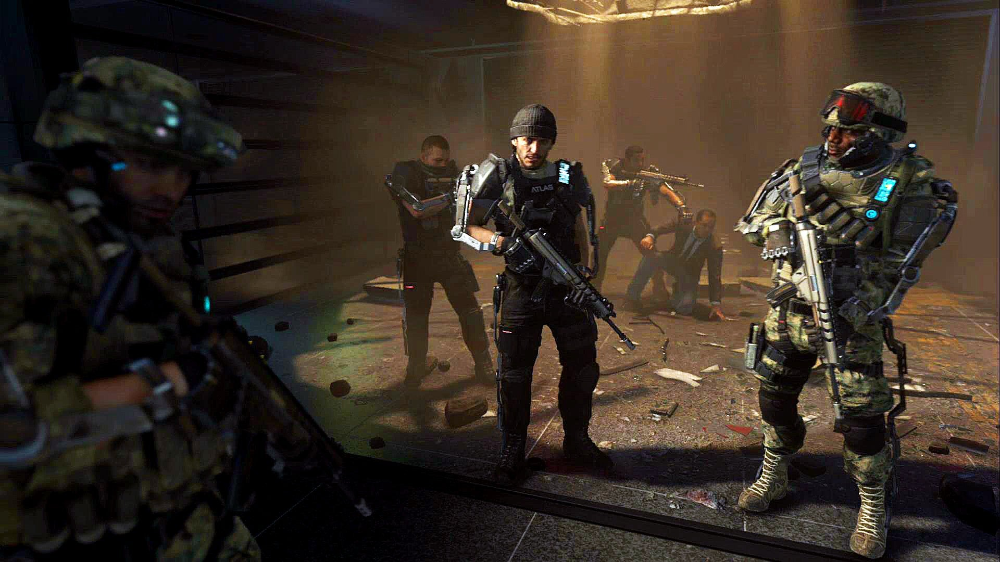

En route
En route they encounter an Atlas rescue team lead by elite operative Gideon, who informs Badger Squad of the enemy presence in the next area before moving on. Pvt. Jackson then comments on Will's relation to Atlas CEO Jonathan Irons and asks why Will never joined, with the later stating that he wished to serve his country instead of his father.